Cómo convertir los registros de varias bases en un conjunto limpio: fusionar los documentos repetidos, unir las variantes de un mismo autor, unificar instituciones y países, agrupar las formas de una misma palabra clave y dejar fuera lo que no corresponde al estudio. Todo lo que se decide aquí alimenta los once análisis de los capítulos siguientes.
La pantalla Limpieza y filtros tiene seis pestañas que se recorren en orden. Las cuatro primeras corrigen los datos; la quinta agrupa las formas de las palabras clave; la última recorta el conjunto al periodo, los tipos de documento o los idiomas que interesan. Ninguna borra nada: los registros importados se conservan tal como se leyeron y cada decisión se puede deshacer.
| Pestaña | Qué resuelve | Sección |
|---|---|---|
| Resumen | Cuántos registros entraron, cuántos documentos quedaron y con qué campo se van a contar los términos. | 4.2 |
| Duplicados | El mismo documento descargado de dos o más bases. | 4.3 |
| Autores | La misma persona escrita con distintas iniciales. | 4.4 |
| Instituciones y países | La misma organización escrita de varias formas y las afiliaciones sin país reconocido. | 4.5 |
| Palabras clave | Singulares y plurales, guiones, erratas y palabras sin contenido. | 4.6 |
| Filtros | Años, tipo de documento, idioma, fuente, área temática y mínimo de citas. | 4.7 |
Un conjunto bibliográfico recién importado casi nunca está listo. Si buscaste en varias bases, el mismo artículo llega dos o tres veces, con títulos escritos de distinta manera y con conteos de citas diferentes. Cada base escribe los nombres de los autores a su modo: unas dan solo las iniciales, otras el nombre completo, y basta que una escriba una partícula («dos», «de», «van») para que una misma persona aparezca dos veces en la lista de autores más productivos. Las afiliaciones mezclan departamento, universidad, ciudad y país en una sola línea de texto, a veces en inglés y a veces en el idioma del país. Y las palabras clave conviven en singular y plural, con guion y sin guion, con el nombre científico completo y abreviado.
Nada de esto es un defecto de las bases: son catálogos distintos, hechos con reglas distintas. Pero si no se corrige, los indicadores mienten en la misma dirección: se sobreestima el número de documentos (duplicados), se reparte la producción de una persona entre varias (variantes de nombre) y se dispersa un tema entre muchas palabras (variantes de escritura). Un núcleo de Bradford, una ley de Lotka o una red de coocurrencia calculados sobre datos sucios son técnicamente correctos y sustantivamente falsos.
Los registros importados no se modifican nunca. La app guarda decisiones (este grupo se fusiona, estas dos firmas son la misma persona, este término prefiere aquella forma) y con ellas construye el conjunto limpio cada vez. Por eso puedes desmarcar una fusión, deshacer una unión de autores o quitar un sinónimo y todo vuelve a su lugar, incluso después de guardar y abrir el proyecto.
La pestaña Resumen es el tablero de la limpieza: cuatro tarjetas con el antes y el después, la tabla de registros por archivo y la elección del campo con el que se contarán los términos en toda la app.
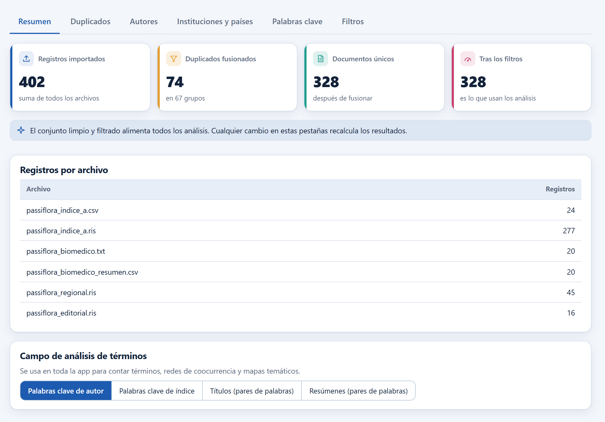
1 2 3 4 5 6| Tarjeta | Qué cuenta | Ejemplo |
|---|---|---|
| Registros importados | Suma de los registros de todos los archivos y búsquedas, antes de limpiar. | 402 |
| Duplicados fusionados | Registros que desaparecieron al unirse con otro, y en cuántos grupos. | 74 en 67 grupos |
| Documentos únicos | Lo que queda después de fusionar: el conjunto limpio. | 328 |
| Tras los filtros | Documentos que cumplen los filtros globales; es lo que leen los análisis. | 328 |
Varios análisis —los términos más frecuentes, la red de coocurrencia, el mapa temático, la evolución temática y el análisis factorial— necesitan una lista de términos por documento. La app ofrece cuatro fuentes posibles para esa lista y la elección vale para toda la sesión y para el informe.
| Campo | Qué es | Cuándo conviene |
|---|---|---|
| Palabras clave de autor | Las que los autores escribieron en el artículo. | Por omisión. Reflejan el lenguaje de quien investiga; son las más usadas en bibliometría. |
| Palabras clave de índice | Las que asigna la base de datos con su vocabulario controlado. | Cuando faltan las de autor, o para comparar con un tesauro; son más uniformes y más numerosas. |
| Títulos (pares de palabras) | Pares de palabras seguidas del título, sin palabras vacías. | Cuando los registros no traen ninguna palabra clave. |
| Resúmenes (pares de palabras) | Los mismos pares, tomados del resumen. | Cuando quieres el vocabulario completo del texto; da muchos más términos y más ruido. |
Si los documentos no traen el campo elegido, la app no deja la pantalla vacía: escoge sola el primer campo que sí exista, lo avisa con un mensaje y lo explica en la tarjeta. La preferencia guardada no cambia: vuelve en cuanto los datos la traigan.
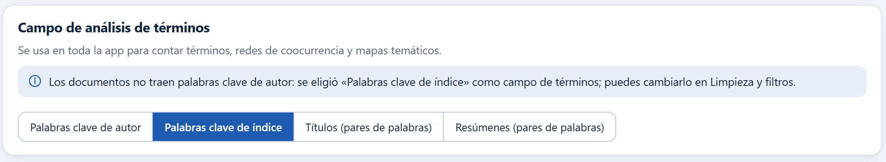
| Si tus registros… | elige… |
|---|---|
| traen palabras clave de autor en casi todos | Palabras clave de autor; revisa antes los sinónimos (sección 4.6). |
| vienen de una sola base con vocabulario controlado | Palabras clave de índice; los términos ya están unificados por la base. |
| mezclan bases y las de autor solo están en unos pocos | Los dos: compara los conteos y quédate con el que describa mejor tu tema. |
| no traen palabras clave (muchos RIS y el catálogo abierto) | Títulos si hay pocos documentos, Resúmenes si hay muchos y quieres más detalle. |
Cambiar el campo recalcula los conteos, las redes y los mapas en cuanto lo eliges; no hay que volver a importar nada.
Dos registros son el mismo documento cuando comparten el DOI o cuando, sin DOI que los contradiga, tienen títulos iguales o casi iguales, el mismo año y un primer autor compatible. La app hace esa comparación sola al terminar la importación y presenta cada grupo para que lo apruebes o lo rechaces.
Comparar todos los títulos contra todos sería inviable: con 402 registros son más de 80,000 comparaciones, y con 20,000 registros, doscientos millones. La app usa el método de vecindario ordenado (Hernández y Stolfo, 1995): ordena los títulos normalizados alfabéticamente, y otra vez leyéndolos al revés, y solo compara cada uno con sus vecinos inmediatos. Así, un título que difiere al principio se encuentra en la segunda pasada y otro que difiere al final, en la primera.
La comparación misma es la distancia de edición (Levenshtein, 1966): el número mínimo de letras que hay que insertar, borrar o cambiar para pasar de un título al otro. La similitud es 1 − distancia ÷ longitud del título más largo, así que 0.95 quiere decir «difieren en menos del 5 % de sus letras». El cálculo se detiene en cuanto la distancia supera el umbral, de modo que los títulos muy distintos se descartan en unos pocos pasos.
A la similitud se le suman tres salvaguardas, porque dos artículos distintos pueden tener títulos casi idénticos: los números del título deben coincidir («Parte I» no es «Parte II»), el año debe ser el mismo (se admite un año de diferencia solo entre archivos distintos, porque una base fecha la publicación en línea y otra la impresa) y los apellidos del primer autor deben ser compatibles. Si los dos registros traen DOI y son distintos, no se agrupan nunca.
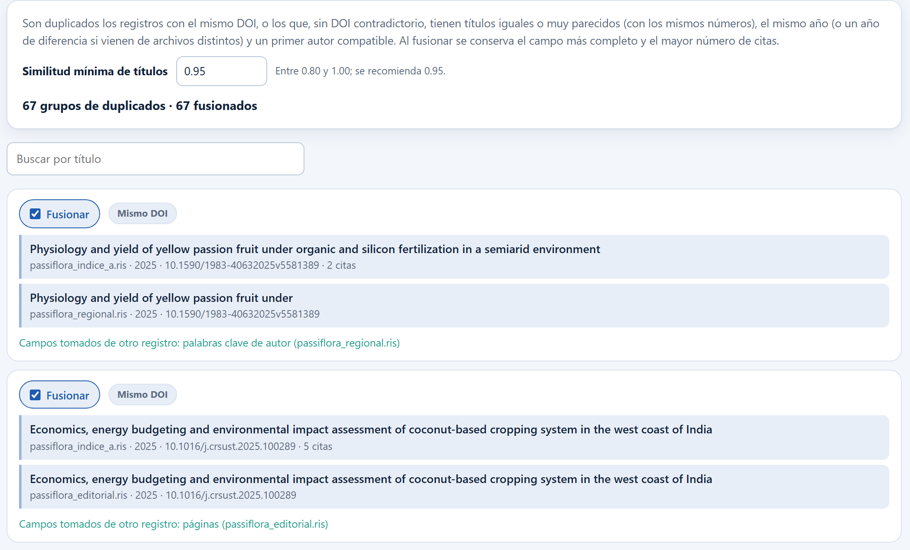
1 2 3 4 5 6 7| Etiqueta | Qué significa | Qué hacer |
|---|---|---|
| Mismo DOI | Los registros comparten el identificador digital. | Aceptar; es la evidencia más fuerte. |
| Título similar al N % | Ninguno contradice al otro con su DOI y los títulos coinciden en ese porcentaje, con el mismo año y un primer autor compatible. | Leer los dos títulos. Con 100 % suele ser seguro; por debajo de 96 % conviene mirar. |
| Mismo DOI y título similar | El grupo se armó por las dos vías (pasa en grupos de tres o más). | Aceptar. |
| DOI distintos: revisar | Un registro sin DOI unió dos registros cuyos DOI no coinciden. | Comparar con cuidado; si no son el mismo documento, desmarcar Fusionar. |
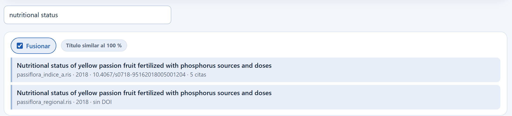
1 2 3Al fusionar no se elige un registro y se tiran los demás: se arma uno nuevo con lo mejor de cada uno. El registro más completo sirve de base y los campos vacíos se rellenan con los de sus compañeros.
| Campo | Regla |
|---|---|
| Resumen y texto de financiamiento | Se queda el más largo. |
| Título, fuente, volumen, número, páginas, DOI, editorial, idioma, tipo de documento | Se queda el del registro base; si está vacío, el del primer registro que lo traiga. |
| Palabras clave, referencias citadas, áreas temáticas, afiliaciones | Se queda la lista más larga. |
| Autores | La lista con más autores que traen afiliación; si empatan, la más larga. |
| Número de citas | El mayor de todos los registros del grupo. |
| Acceso abierto, ISSN, ISBN, países | Se combinan: basta que un registro lo diga. |
En las seis exportaciones del capítulo 3 se formaron 67 grupos: 66 por DOI compartido y 1 por título idéntico (el de la figura 4.5). Son 61 parejas, 5 tríos y un grupo de cuatro registros, es decir 74 registros que desaparecen y 328 documentos únicos. Los cruces más frecuentes fueron el RIS del índice de citas multidisciplinario A con el índice regional de revistas (34 grupos), las dos exportaciones del índice biomédico entre sí (14), la plataforma de la editorial con el índice A (13) y el índice biomédico con el índice A (5); un solo documento estaba en los cuatro archivos a la vez.
La fusión no solo quita registros: 54 de los 67 documentos fusionados ganaron algún campo que su registro base no traía. El más frecuente fueron las palabras clave de autor (32 documentos), seguidas de las páginas (18), el identificador del índice biomédico (5), la lista de autores (5), el resumen (4) y las palabras clave de índice (4). Los 67 grupos, los 74 registros y los 328 documentos se comprobaron con un lector independiente que leyó los seis archivos fuera de la app.
Todos los nombres se escriben en una sola forma, Apellido, I., tomando las iniciales del nombre de pila. Las diferencias que no cambian esa forma —acentos, guiones, mayúsculas, espacios, partículas en minúscula— se unen solas: Cadena-Iñiguez J. y Cadena Iniguez, Jorge son la misma clave sin que tengas que hacer nada.
Lo que la app no decide sola es el caso contrario: dos firmas con el mismo apellido y la misma primera inicial, pero distintas iniciales siguientes. Puede tratarse de la misma persona (una base escribió todos sus nombres y otra solo uno) o de dos personas distintas de una familia académica. Esa decisión es tuya, y la pestaña te da la evidencia para tomarla: cuántos documentos firma cada variante y cuántos coautores comparte con la variante principal.
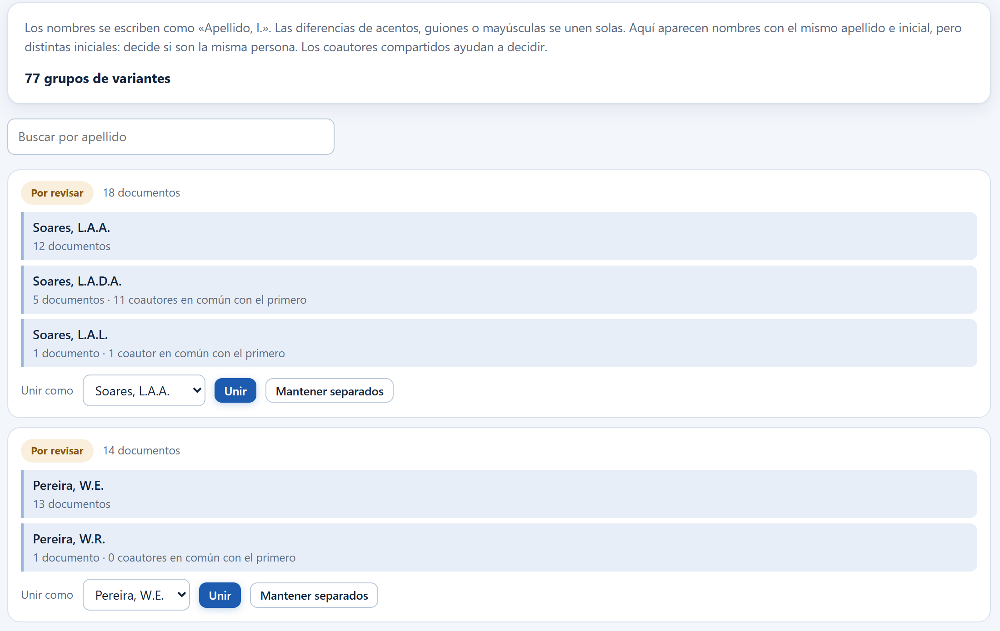
1 2 3 4 5El primer grupo de la figura 4.6 reúne tres firmas del mismo apellido e inicial. Soares, L.A.A. aparece en 12 documentos y Soares, L.A.D.A. en 5, y estas dos comparten 11 coautores: es la misma persona, escrita por una base con las iniciales de sus dos apellidos maternos y por otra incluyendo la partícula («Lauriane A. dos A.» frente a «L.A.D.A.»). La tercera, Soares, L.A.L., firma un solo documento y comparte un coautor: no hay evidencia para unirla, y lo prudente es Mantener separados o unir solo las dos primeras.
El segundo grupo es el caso opuesto: Pereira, W.E. (13 documentos) y Pereira, W.R. (1 documento) no comparten ningún coautor. Son dos personas. Las cifras se comprobaron leyendo los seis archivos fuera de la app: las 12 apariciones de la primera firma y las 5 de la segunda corresponden a 17 documentos distintos, con los mismos 11 coautores en común.
| Si las variantes… | entonces… |
|---|---|
| comparten varios coautores y trabajan el mismo tema | únelas con la grafía más completa o más frecuente. |
| no comparten ningún coautor | déjalas separadas; casi siempre son personas distintas. |
| comparten uno o dos coautores y una firma un solo documento | consulta el documento (autor de correspondencia, afiliación) antes de decidir; en la duda, sepáralas. |
| son muchas y el estudio no trata de autores | revisa solo los primeros grupos: están ordenados por número de documentos, y los de abajo casi no mueven los indicadores. |
Unir o separar cambia la productividad, la ley de Lotka, el impacto por autor y la red de colaboración; no cambia el número de documentos.
Una vez unido el grupo, toda la app muestra una sola grafía: la que eliges en Unir como. Si no unes nada, cada clave conserva igualmente la grafía más frecuente entre las que aparecen en los documentos, así que las listas no muestran la forma de una sola base. Las uniones viajan en el proyecto y se recuperan al abrirlo.
Las afiliaciones llegan como una sola línea de texto que mezcla laboratorio, departamento, facultad, universidad, ciudad, código postal y país. Para contar instituciones hay que decidir cuál de esas partes nombra a la organización. La app parte la línea en las comas y prefiere la parte que contiene una palabra de organización completa (universidad, instituto, colegio, academia, hospital, consejo, fundación…) sobre la que nombra una subunidad (departamento, facultad, escuela, laboratorio, unidad, programa). Después escribe completas las abreviaturas de las exportaciones etiquetadas (Univ → University, Natl → National, Agr → Agricultural) y pasa a formato título los nombres escritos todos en mayúsculas. Por último, las escrituras que solo difieren en acentos, mayúsculas o espacios se cuentan como una sola institución, con su grafía más frecuente: Paraíba y Paraiba son la misma. Es la misma regla en esta tabla, en la pantalla Autores y en la red de colaboración.
El país sale del final de la afiliación, con un diccionario propio que reconoce las formas habituales de cada nombre en varios idiomas. Lo que no reconoce se puede resolver con un alias.
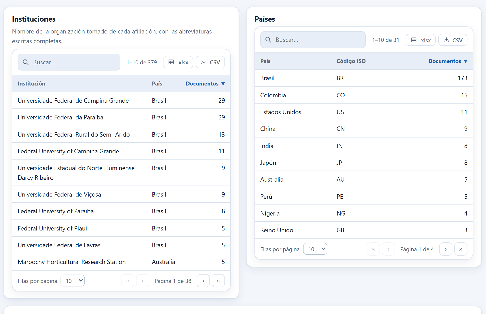
1 2 3 4 5 6Debajo de las tablas hay dos formularios de equivalencias. El primero unifica nombres de instituciones: se escribe el nombre como aparece en la tabla y el nombre preferido. El segundo asigna un país a un texto de afiliación, y trae debajo la lista de las afiliaciones más frecuentes cuyo país no se reconoció, con un botón Asignar que las copia al formulario.
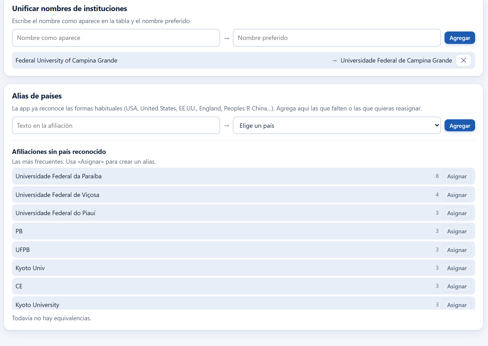
1 2 3 4En los datos de ejemplo, Universidade Federal de Campina Grande aparece en primer lugar con 29 documentos, empatada con Universidade Federal da Paraíba, y dos filas más abajo está Federal University of Campina Grande con 11: son la misma institución, escrita en portugués por unas fuentes y en inglés por otras. Al agregar la equivalencia de la figura 4.8, la tabla pasa a mostrar 40 documentos en una sola fila, que queda sola en el primer lugar, y el total de instituciones distintas baja de 379 a 378. La fila siguiente, Federal University of Paraiba con 8, es el mismo caso para la otra universidad y se resuelve igual.
Deducir la institución de una línea de texto libre nunca es exacto. La app prefiere la parte de la afiliación que nombra la organización completa sobre los departamentos, las unidades y los programas («Academic Unit of Agricultural Sciences, Universidade Federal de Campina Grande» cuenta para la universidad), pero una afiliación escrita solo con siglas, como «PPGA/CCA/UFPB», deja filas como PPGA o UFPB, que no se reconocen como la universidad. Si tu estudio cuenta instituciones, revisa las primeras filas de la tabla y resuelve con equivalencias lo que veas mal: es trabajo de unos minutos y cambia el resultado. Lo mismo vale para los países: el ejemplo tiene afiliaciones que terminan en el nombre de la universidad o en una sigla («UFPB», «PB», «CE») en lugar del país, y solo un alias las coloca.
Las equivalencias de instituciones y de países, igual que los sinónimos, las palabras vacías y el campo de términos, se recuerdan en esta computadora y además viajan dentro del proyecto. Así, el trabajo de un estudio se reaprovecha en el siguiente sin volver a escribirlo, y al abrir un proyecto en otra computadora las equivalencias llegan con él.
La pestaña Palabras clave tiene cuatro partes: el campo de términos (el mismo de la sección 4.2), la lista de términos más frecuentes, las sugerencias de sinónimos y las dos listas que puedes editar —la tabla de sinónimos y las palabras vacías—.
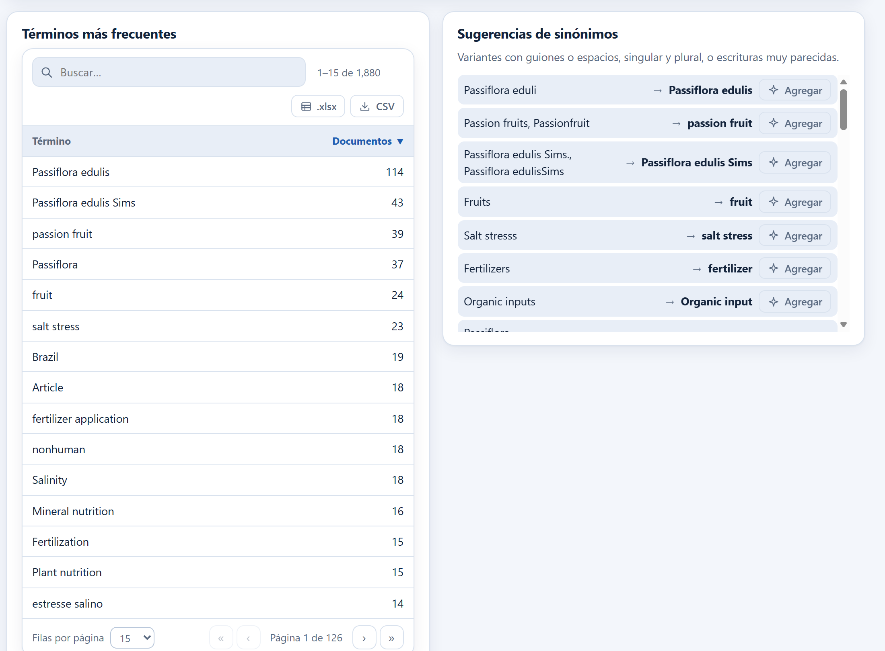
1 2 3Las sugerencias salen de tres comparaciones: las escrituras que coinciden al quitar espacios, guiones y puntuación; los singulares y plurales; y las escrituras muy parecidas (la misma distancia de edición de la sección 4.3, con un 90 % de similitud). El término preferido que propone es el más frecuente del grupo. Nada se aplica hasta que pulsas Agregar: la app sugiere, tú decides.
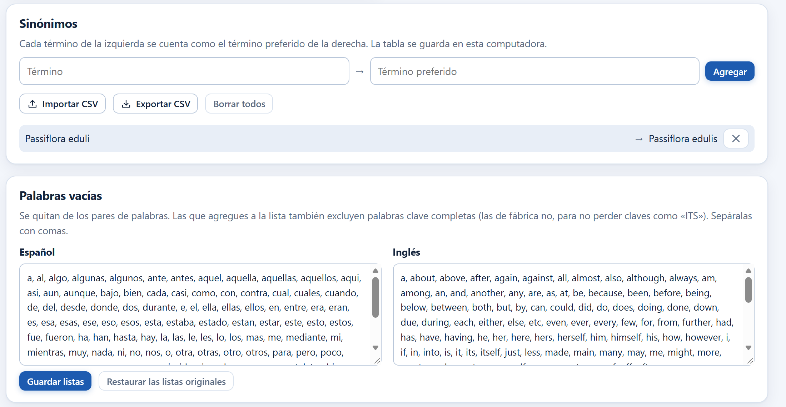
1 2 3 4 5Las 328 obras del ejemplo traen 1,880 palabras clave de autor distintas. Entre ellas hay 19 escrituras diferentes que contienen «flavicarpa» —Passiflora edulis f. flavicarpa, … Sims f. flavicarpa Deg., … Degener, … var. flavicarpa, Passiflora edulisf.flavicarpa y hasta dos con la errata falvicarpa—, repartidas en 40 apariciones. Sin unificarlas, la variedad más estudiada del maracuyá no aparece en ningún mapa temático, porque ninguna de sus formas junta suficientes documentos por separado.
Otros casos son más simples y también cuentan: Passiflora eduli (4 documentos, una letra menos) frente a Passiflora edulis (114), Passion fruits (14) y Passionfruit (2) frente a passion fruit (39), o Fruits (14) frente a fruit (24). Los conteos se comprobaron contando las palabras clave de los seis archivos fuera de la app.
| Caso | Qué conviene |
|---|---|
| Singular y plural, guiones, mayúsculas, erratas evidentes | Unificar siempre; es corrección, no interpretación. |
| Nombre científico completo y abreviado de la misma especie | Unificar, y decirlo en la metodología. |
| Sinónimos de campo (salinity y salt stress) | Depende de la pregunta: unificar simplifica el mapa, separar conserva el matiz. Decide una vez y documéntalo. |
| Términos genéricos (agriculture, plants) o de indización (Article) | Mandarlos a palabras vacías, no a sinónimos. |
La tabla de sinónimos se exporta a CSV: guárdala junto al proyecto y publícala como material suplementario para que tu estudio se pueda reproducir.
Los filtros recortan el conjunto limpio para todos los análisis a la vez. No borran documentos: los dejan fuera mientras estén activos. Sin marcar ninguna opción se incluyen todas, y cada opción muestra a su lado cuántos documentos tiene, así que la pantalla sirve además como descripción rápida del conjunto.
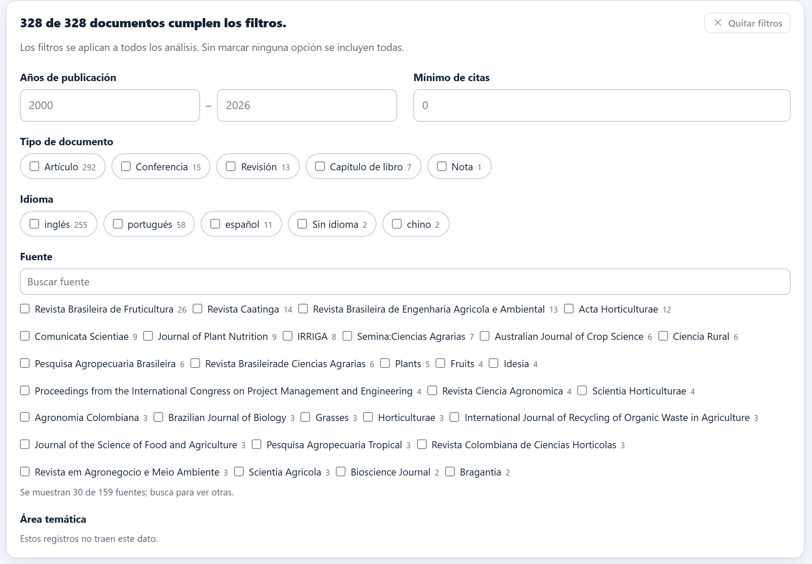
1 2 3 4 5 6 7| Filtro | Cómo funciona | Cuándo usarlo |
|---|---|---|
| Años de publicación | Intervalo cerrado. Los documentos sin año quedan fuera en cuanto escribes cualquiera de los dos extremos. | Para acotar el periodo del estudio o comparar décadas. |
| Mínimo de citas | Conserva los documentos con ese número de citas o más. | Para quedarte con la literatura que ha tenido eco; úsalo con cuidado, castiga a lo reciente. |
| Tipo de documento | Varias casillas; se incluye el documento si es de alguno de los tipos marcados. | Para excluir editoriales, notas y erratas, o para analizar solo revisiones. |
| Idioma | Igual que el anterior; Sin idioma agrupa a los registros que no lo traen. | Para un estudio en un idioma, o para medir cuánta literatura local hay. |
| Fuente | Se muestran las 30 fuentes con más documentos; el buscador encuentra las demás. | Para centrarse en un conjunto de revistas o excluir una atípica. |
| Área temática | Las áreas que asigna la base de datos, cuando las trae. | Para separar la parte agronómica de la parte biomédica de una búsqueda amplia. |
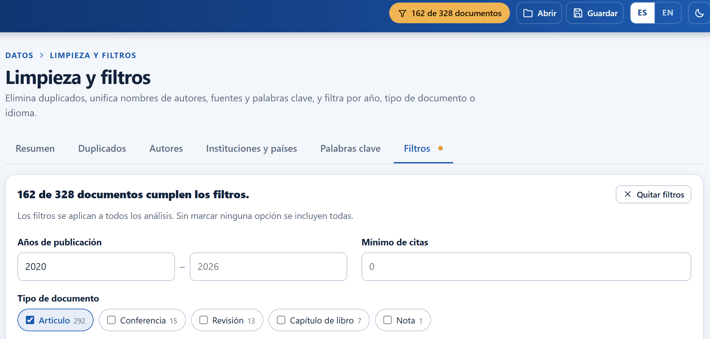
1 2 3 4 5 6De los 328 documentos del ejemplo, 184 son de 2020 en adelante (cifra comprobada leyendo los seis archivos fuera de la app). Al marcar además Artículo quedan 162: los 22 restantes son 8 revisiones, 7 ponencias de congreso y 7 capítulos de libro. Con esos filtros puestos, el panorama general, las fuentes, los autores, las redes y el informe describen solo esos 162 documentos, y la metodología que redacta el informe lo deja escrito.
Filtrar es una decisión metodológica, no un ajuste de pantalla. Si dejas fuera un periodo, un tipo de documento o un idioma, dilo en tu artículo o tesis con el número de documentos antes y después: es parte de la reproducibilidad del estudio, igual que la cadena de búsqueda. El informe del capítulo 13 escribe ese párrafo con los filtros que tengas puestos, y el diagrama PRISMA del capítulo 12 los cuenta como registros excluidos.
Si además haces cribado PRISMA (capítulo 12), los análisis pueden restringirse a los documentos incluidos en la revisión. Entonces el contador del encabezado dice … documentos · solo incluidos y al pulsarlo lleva a la pantalla PRISMA en lugar de a los filtros. Los dos recortes se acumulan: primero los filtros, después la inclusión.
Con el conjunto limpio y filtrado empieza el análisis. El capítulo siguiente abre el Panorama general: las trece tarjetas que resumen la colección, la producción anual, las citas por año y los tipos de documento.